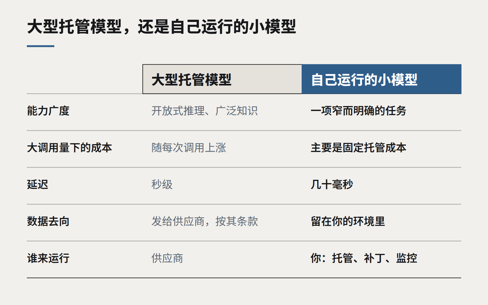

洞察
AI 与模型
小模型，本地数据
不是每个 AI 任务都需要世界上最大的模型。对于隐私敏感、调用量大的工作，一个由你掌控的小模型，往往更便宜、更快，也更容易向监管和客户交代。

关于 AI 的公共讨论被最大的那些模型主导：它们写文章、推理问题、登顶排行榜。它们确实了不起，对开放式工作来说也常常是正确的工具。但企业实际部署 AI 的方式正在发生一个安静的转变，方向恰恰相反。
在越来越多的生产负载里，干活的是小模型——小到能跑在一台普通服务器、一台笔记本上，或者客户自己的环境里。它们的通用能力弱得多，但在一个窄而明确的任务上，配合好的指令和少量适配，往往已经够用，而且带来了大模型无法比拟的优势。
小模型在哪里胜出
- 不该离开的数据。 医疗记录、法律文件、客户财务。当模型运行在你自己的基础设施里——或者你掌控的新西兰区域——数据治理的讨论会简单得多：没有任何东西发给第三方，也没有任何东西被保留在别处。
- 大调用量。 给每一封来信分类、给每一份文档打标签、从每一张发票抽取字段。在每月数百万次调用的规模下，大型托管模型和小型自运行模型之间的价差，可能决定一个功能是自负盈亏还是入不敷出。
- 延迟。 小模型几十毫秒就能作答，快到可以在用户打字时、在交易处理过程中直接内联运行。
- 稳定。 你托管的模型，只有你改它时才会变。没有悄无声息的升级，没有弃用通知，也不会每个季度行为都有点不一样。

小模型不擅长什么
小模型在冗长的开放式推理、需要广泛世界知识的任务、以及含糊或复杂的指令上表现吃力。它们还把运维工作放回了你这边：托管、监控、安全补丁和升级。对低调用量或探索性工作来说，大型托管模型几乎总是更好的选择。
常见模式：大模型设计，小模型运行
我们最常用的做法是两者结合。开发阶段用大模型帮助定义任务、生成并标注训练样本、设定质量标准；然后把一个小模型适配到这个具体任务上，部署在高调用量的路径里。对于小模型标记为“不确定”的情况，大模型仍然作为兜底。
让这一切安全的，是评测集。只有当小模型在你的真实样本上，在约定的容差内追平了大模型的准确率，它才会被正式启用；并且任何一个模型发生变化时，都要用同一套评测集重新检验。
用来做决定的问题
- 任务是否窄而明确，有清晰的正确答案？
- 数据是否受隐私、合同或数据主权的约束？
- 调用量是否大到单次调用成本成为主要因素？
- 你是否已经有、或者能够建立几百条高质量的标注样本？
- 是否有人负责这个模型在生产环境中的运行？
如果大多数问题的答案是肯定的，小模型就值得一试。它很少会是系统里最亮眼的部分，却很可能是最划算的部分。
继续阅读
全部洞察